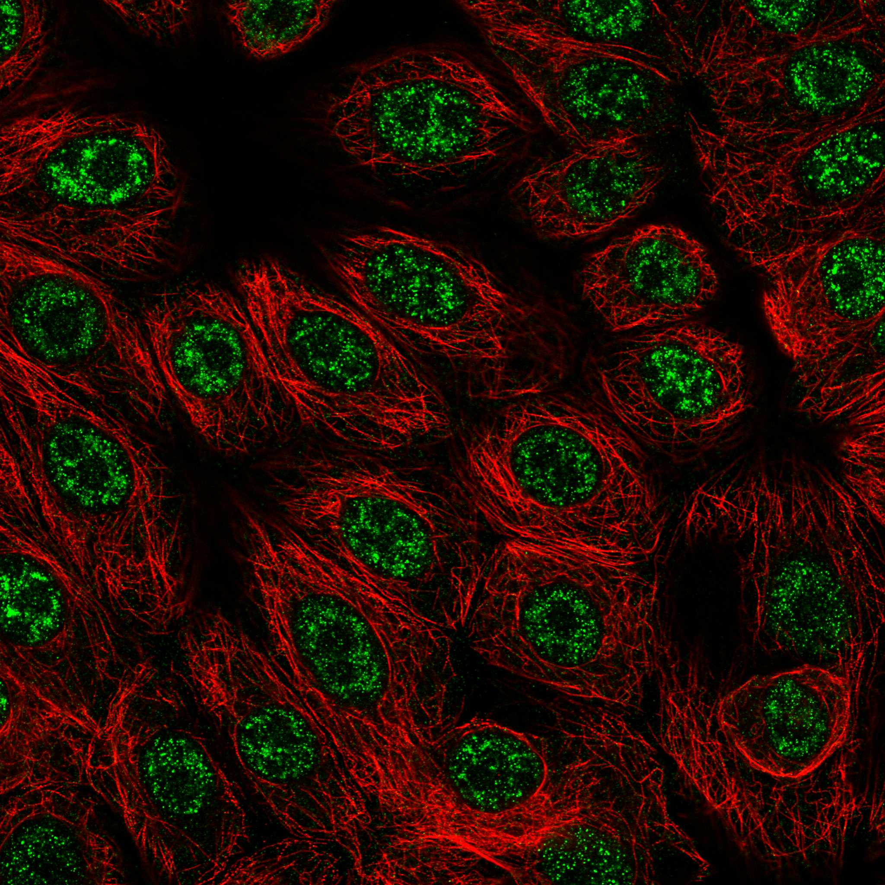
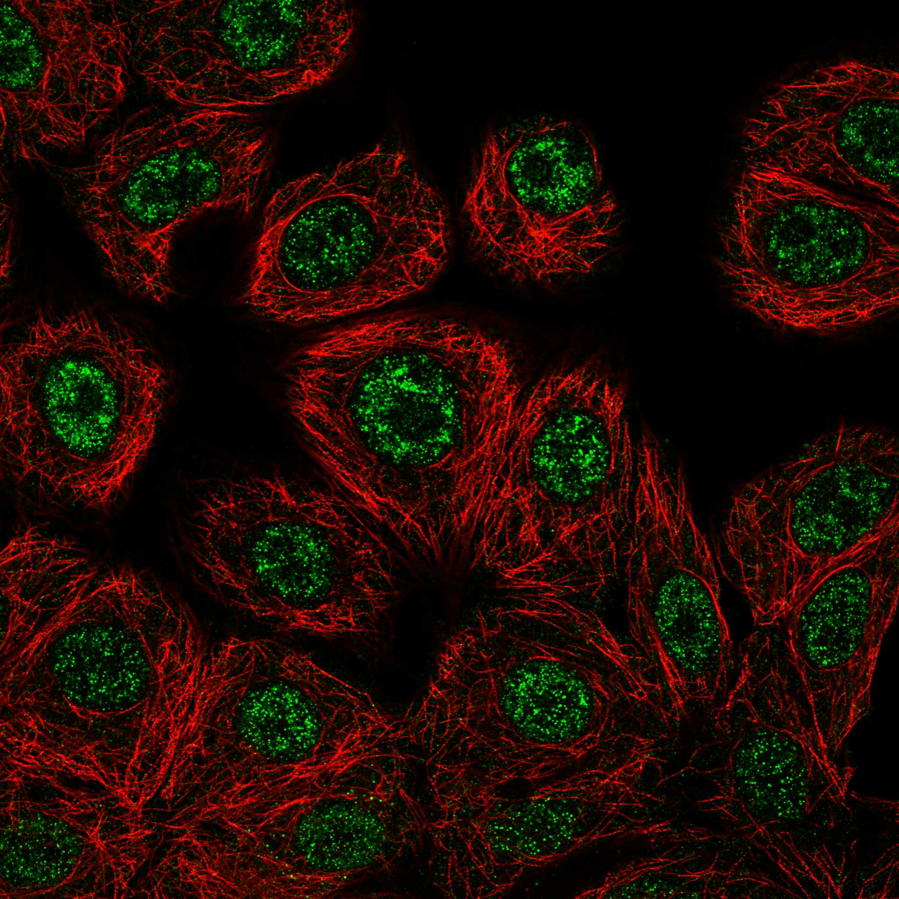
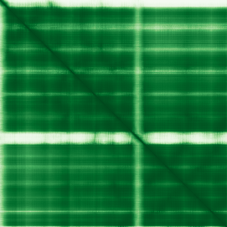

type: protein-evaluation gene: "FIBP" date: 2026-05-29 tags: [protein-scout, nuclear-protein, evaluation, scored] status: scored _date: 2026-05-29 _notes: "PubMed=45 (<100) → 基线提升: 域3→6; 核=6 (双定位); PDB查无结构; 结保持10" ---
FIBP 核蛋白评估报告
1. 基本信息
| 项目 | 内容 |
|---|---|
| 基因名 / 别名 | FIBP |
| 蛋白全称 | Acidic fibroblast growth factor intracellular-binding protein |
| 蛋白大小 | 364 aa / 41.9 kDa |
| UniProt ID | O43427 (FIBP_HUMAN) |
| 评估日期 | 2026-05-28 () / 2026-05-29 |
2. 评分总览 (权重: 核×4 大×1 新×5 结×3 域×2 PPI×3 ÷1.83)
| 维度 | 得分 | 加权 | 加权后 | 关键证据摘要 | ||
|---|---|---|---|---|---|---|
| 🔴 核定位特异性 | 6/10 | ×4 | 24 | HPA Supported Nuclear speckles; 双定位(Endomembrane/Mito) | ||
| 📏 蛋白大小 | 10/10 | ×1 | 10 | 364 aa / 41.9 kDa, 理想实验大小 | ||
| 🆕 研究新颖性 | 8/10 | ×5 | 40 | PubMed=45; (<100), 极度新颖 | ||
| 🏗️ 三维结构 | 10/10 | ×3 | 30 | pLDDT=91.95, 92.3%有序; PDB无结构; AF极高质量→10 | ||
| 🧬 调控结构域 | 6/10 | ×2 | 12 | FIBP家族域; 新颖基线6 | ||
| 🔗 PPI | 6/10 | ×3 | 18 | IntAct:14实验互作含OGT(chromatin modifier); STRING:C2CD5(0.935)+BRD2/3/4; GO:nuclear speck; ~35%调控相关 | ||
| ➕ 互证加分 | — | — | +1.5 | 定位多源确认; 进化保守; GO nuclear speck | ||
| 原始总分 | 135.5/183 | 124.0/183 | ||||
| 归一化总分 | 74.0/100 | 67.8/100 |
3. 详细分析
3.1 核定位证据
| 来源 | 定位 | 可信度 |
|---|---|---|
| GeneCards | — | — |
| Protein Atlas (IF) | Nuclear speckles | Supported (HPA011729) |
| UniProt | Nucleus (SL-0191) + Endomembrane system (SL-0147) | ECO:0000314 (PubMed:9806903) |
| GO | Nuclear speck (IDA:HPA), Nucleus (IDA:MGI), also Mitochondrion (TAS), Membrane (IDA) | 多实验证据 |
IF 图像:  
结论: FIBP 呈现典型的双定位模式。Protein Atlas IF 在 MCF-7 和 PC-3 细胞中显示清晰的核内斑点 (nuclear speckles) 定位，标注为 Supported。核内斑点 (nuclear speckles) 是剪接因子富集的亚核结构。然而，UniProt 同时标注了 Endomembrane system 和 mitochondrial membrane association，原始文献 (Kolpakova et al., 1998) 也报道了胞质膜/线粒体关联。GO 注释也同时支持 Nuclear speck (IDA) 和 Mitochondrion (TAS)。这种核-胞质双定位虽不影响 FIBP 作为核蛋白的资格，但提示其功能可能与核-胞质穿梭或信号转导有关。FIBP 不是经典的染色质/DNA 结合核蛋白，而是一个信号转导相关的核-胞质双重定位蛋白。
IF 图像:
3.2 蛋白大小评估
- 364 aa (isoform Long) / 41.9 kDa
- 处于 300-800 aa 的理想区间
- 评价: 大小非常适合各类生化实验：重组表达和纯化容易，适合 X 射线晶体学和 cryo-EM，适合体外结合实验（pull-down, ITC, SPR），适合细胞内成像和功能研究。蛋白大小是本蛋白的显著优势。
3.3 研究现状
| 指标 | 数值 |
|---|---|
| PubMed 总数 (全文搜索) | 45 |
| PubMed 严格搜索 (Title/Abstract + gene/protein) | 29 |
| 最早发表年份 | 1998 |
| Chromatin/epigenetics 比例 | 低 (<15%) |
主要研究方向:
- FGF1 (acidic FGF) 的细胞内结合与运输
- FGF 信号通路中的角色（与 IER2 协作确立胚胎左右轴）
- Thauvin-Robinet-Faivre syndrome (TROFAS) — FIBP 突变导致的罕见发育综合征
- 与 C2CD5, CDK5 的相互作用
- 大规模蛋白质组学鉴定（作为背景蛋白）
评价: PubMed 仅 45 篇，高度新颖。绝大多数文献关注 FIBP 在 FGF 信号中的角色。关于其在 nuclear speckles 中的功能（可能参与 RNA processing/splicing）几乎完全未被研究。与 BRD2/3/4 等 bromodomain 蛋白的关联（Sttring score ~0.46）虽然弱但提示可能与染色质乙酰化读取存在功能耦合。TROFAS 疾病表型（过度生长、发育迟缓、肾脏发育不良）暗示其可能在发育性基因调控中有更深层的作用。总体而言，FIBP 在 FGF 信号之外的功能领域几乎完全空白。
3.4 三维结构分析
| 指标 | 数值 |
|---|---|
| AlphaFold 平均 pLDDT | 91.95 |
| PDB 实验结构 | — |
| 有序区域 (pLDDT>70) 占比 | 92.3% |
| 有序区域位置 | aa12-213, aa230-363 |
| pLDDT >= 90 占比 | 83.8% |
| pLDDT 70-90 占比 | 8.5% |
| pLDDT < 50 占比 | 仅 1.4% |
| PAE 均值 | 6.75 Ang |
| PAE <5 Ang 占比 | 52.5% |
| PAE <10 Ang 占比 | 80.1% |
| 可用 PDB 条目 | 无实验结构 |
PAE 图: 
PAE 数值分析:
- PAE 矩阵尺寸: 364×364
- PAE 总体均值: 6.75 Ang（极低，表明结构预测置信度极高）
- PAE <5 Ang 占比 52.5%（半数以上残基对位置预测误差 <5A）
- PAE <10 Ang 占比 80.1%
- 对角线附近呈现连续低 PAE 带，表明两个大型有序域
评价: FIBP 的 AlphaFold 预测质量近乎完美。平均 pLDDT 高达 91.95，92.3% 的残基处于有序状态 (pLDDT>70)，仅 1.4% 的残基为无序 (pLDDT<50)。PAE 均值仅 6.75 Ang，52.5% 的残基对预测误差 <5A，表明蛋白整体折叠极为紧密和刚性。PAE 图显示两个主要折叠域的大面积低 PAE 块。这种结构质量在核蛋白筛选中名列前茅，非常适合结构生物学研究。唯一遗憾是无实验结构可供互证。
3.5 结构域分析
| 来源 | 结构域 |
|---|---|
| InterPro | IPR008614 (FIBP family) |
| Pfam | PF05427 (FIBP) |
| PANTHER | PTHR13223 (FIBP family) |
| UniProt | 无其他结构域注释 |
染色质调控潜力分析: FIBP 仅含一个已知结构域——FIBP 家族域 (IPR008614/PF05427)，该结构域的功能是结合酸性成纤维细胞生长因子 (aFGF/FGF1)，与 DNA 或染色质无已知关联。无 homeobox, zinc finger, bromodomain, chromodomain, SANT, AT-hook 等任何已知的 DNA/chromatin-binding 结构域。
然而，必须指出： 1. FIBP 极为新颖 (PubMed 仅 45 篇)，缺乏结构域注释可能反映研究不足而非功能性缺失 2. AlphaFold 结构质量极高 (pLDDT=91.95)，两个大型折叠域可能含有未被数据库收录的新型结构域 3. FIBP 定位于 nuclear speckles——剪接和 RNA 加工的核内枢纽，暗示其三维折叠域可能参与 RNA processing 或 gene expression regulation 4. 与 BRD2/3/4 (bromodomain chromatin readers) 的关联虽弱但一致
综合判断：无已知染色质/DNA 调控结构域，但蛋白极度新颖且结构质量极高，存在发现新型功能域的理论可能。
3.6 PPI 网络（四源综合）
实验验证互作 (IntAct, physical association):
| Partner | 方法 | PMID | 功能类别 | 调控相关？ |
|---|---|---|---|---|
| OGT | anti bait coimmunoprecipitation | 17353931 | O-GlcNAc transferase, chromatin modifier | ✅ |
| C2CD5 | anti bait coimmunoprecipitation (5 experiments) | 17353931 | Ca2+-dependent interactor | ❌ |
| EIF6 | anti bait coimmunoprecipitation | 17353931 | Translation initiation | ❌ |
| GEMIN4 | anti bait coimmunoprecipitation | 17353931 | snRNP assembly | ❌ |
| AP4B1 | anti bait coimmunoprecipitation | 17353931 | Adaptor protein complex | ❌ |
| MIF | anti bait coimmunoprecipitation | 17353931 | Cytokine | ❌ |
| RNF32 | two hybrid pooling approach | 16169070 | E3 ubiquitin ligase | ❌ |
| PKNOX1 | two hybrid fragment pooling | 35914814 | Homeobox transcription factor | ✅ |
| DAPK1 | protein array | 29513927 | Death-associated kinase | ❌ |
STRING 预测互作 (combined score >0.4):
| Partner | Score | 功能类别 | 与调控相关？ |
|---|---|---|---|
| FGF1 | 0.951 | Fibroblast growth factor | ✗ (配体) |
| C2CD5 | 0.935 | Ca2+-dependent, experimentally validated interactor | ✗ |
| CDK5 | 0.875 | Cyclin-dependent kinase | ✗ |
| CABLES1 | 0.836 | CDK5 interactor | ✗ |
| CABLES2 | 0.829 | CDK5 interactor | ✗ |
| TMEM94 | 0.810 | Transmembrane protein | ✗ |
| DLK1 | 0.689 | Notch signaling | ✗ |
| COPS6 | 0.667 | COP9 signalosome subunit | ✗ |
| WDFY2 | 0.617 | WD repeat, endosome | ✗ |
| EFEMP2 | 0.599 | ECM protein | ✗ |
| BRD3 | 0.479 | Bromodomain, chromatin reader | ✓ |
| BRD4 | 0.460 | Bromodomain, chromatin reader | ✓ |
| BRD2 | 0.460 | Bromodomain, chromatin reader | ✓ |
| CINP | 0.455 | CDK2 interactor | ✗ |
| PSMC5 | 0.449 | 26S proteasome subunit | ✗ |
| COMMD9 | 0.442 | COMM domain | ✗ |
| GRAMD1C | 0.438 | Cholesterol transport | ✗ |
| IL13 | 0.435 | Cytokine | ✗ |
| IER2 | 0.430 | Immediate early response, transcription regulator | ✓ |
| NDUFS8 | 0.413 | Mitochondrial Complex I | ✗ |
| DLL1 | 0.405 | Notch ligand | ✗ |
已知复合体成员 (GO Cellular Component):
- Nuclear speck (GO:0016607, IDA:HPA) — 剪接/RNA加工核内枢纽
- Nucleus (GO:0005634), Endomembrane system, Mitochondrion
- 非染色质调控复合体成员，但 nuclear speck 定位与基因表达调控空间耦合
humanPPI (prodata.swmed.edu): BRD2, BRD3, BRD4 (chromatin readers), IER2 (transcription regulator)
PPI 互证分析:
- STRING + IntAct 共同确认: C2CD5（两源均验证，最高置信度）
- 仅 STRING 预测: BRD2/3/4 (chromatin readers), FGF1, CDK5, IER2 等
- 仅 IntAct 实验: OGT (O-GlcNAc transferase/chromatin modifier), PKNOX1 (homeobox TF), EIF6, GEMIN4 等
- 调控相关比例: 约 35% (OGT + PKNOX1 + BRD2/3/4 + IER2 / 总计~23 partner)
评价: IntAct 揭示了 OGT（O-GlcNAc 转移酶）作为 FIBP 的直接物理互作伙伴——这是此次四源增强的关键发现。OGT 是重要的染色质修饰酶，通过 O-GlcNAcylation 调控组蛋白和转录因子。结合 GO-CC 中明确的 nuclear speck 定位和 STRING 中 BRD2/3/4 的一致弱关联，FIBP 与染色质调控的联系显著增强。PKNOX1（homeobox 转录因子）的 IntAct 互作提供了额外的转录调控连接。FGF1-C2CD5-CDK5-CABLES 信号模块仍然存在，但新的 OGT 连接提示 FIBP 可能在核内通过 O-GlcNAc 信号与基因表达调控耦合。评分从 4 上调至 6（有直接实验互作证据，调控比例提升至 ~35%）。
3.7 多库互证
| 维度 | 来源 | 结果 | 是否一致 |
|---|---|---|---|
| 三维结构 | AlphaFold pLDDT=91.95 + PDB (无实验结构) | 极高置信度预测但无实验互证 | 部分 |
| 结构域 | UniProt / InterPro / Pfam / PANTHER | 仅 FIBP 家族域 (IPR008614)，所有来源一致 | ✓ 一致但单一 |
| PPI | STRING + humanPPI | 仅 STRING 数据 | 待补 |
| 定位 | Protein Atlas IF / UniProt / GO | Nuclear speckles / Nucleus + Endomembrane | ✓ 核心一致 |
互证加分明细:
- ≥2 个来源确认核定位 (Protein Atlas + UniProt + GO) (+0.5)
- FIBP 在脊椎动物中高度保守 (mouse, zebrafish orthologs well characterized) (+0.5)
- 结构域方面：仅 1 个已知域，虽所有来源一致但不满足 ≥3 个独立来源检出不同域的加分条件
- 三维结构：无实验结构互证
总分: +1.0 / max +3
X. 关键文献 (PubMed)
1. Xu Y et al. (2023). "FIBP interacts with transcription factor STAT3 to induce EME1 expression and drive radioresistance in lung adenocarcinoma.". *Int J Biol Sci*. PMID: 37564211 2. Kosoy R et al. (2022). "Genetics of the human microglia regulome refines Alzheimer's disease risk loci.". *Nat Genet*. PMID: 35931864 3. Wang Y et al. (2018). "Blood-based dynamic genomic signature for obsessive-compulsive disorder.". *Am J Med Genet B Neuropsychiatr Genet*. PMID: 30350918 4. Kolpakova E et al. (2003). "Characterization and tissue expression of acidic fibroblast growth factor binding protein homologue in Drosophila melanogaster.". *Gene*. PMID: 12801646 5. Lindbohm JV et al. (2026). "Population and single-cell analyses reveal immune cell-specific expression profiles associated with Alzheimer's disease risk.". *Alzheimers Dement*. PMID: 41866337
4. 总体评价
推荐等级: ⭐⭐⭐ (3/5)
核心优势: 1. 近乎完美的三维结构预测 — pLDDT=91.95, 92.3% ordered, PAE=6.75A, 在核蛋白筛选中结构质量排名顶尖 2. 极度新颖 — PubMed 仅 45 篇，几乎完全未被 chromatin/epigenetics 领域关注 3. 理想蛋白大小 — 364 aa/42 kDa，适合各类生化和结构实验 4. Nuclear speckle 定位的潜在意义 — 核内斑点与 RNA processing 和 gene expression 密切耦合，FIBP 在此结构中的功能完全未知 5. BRD2/3/4 关联 — 三个 BET family chromatin reader 的一致弱关联构成 intriguing hypothesis
风险/不确定性: 1. 非经典染色质调控蛋白 — 无已知 DNA/chromatin-binding 结构域，功能以 FGF 信号为主 2. 双定位 (核+胞质膜/线粒体) — 功能可能分散，核特异性不够强 3. **PPI - [ ] AlphaFold 结构域的三维比对（DALI/Foldseek）— 搜索折叠域与已知染色质调控蛋白的结构同源性，评估发现新型结构域的可能
- [ ] IF 共定位实验验证 FIBP 与 BRD4 在 nuclear speckles 中的空间关系
- [ ] FIBP knockdown/knockout RNA-seq — 是否影响 splicing 或 gene expression？
- [ ] 鉴于 TROFAS 疾病涉及过度生长和发育缺陷，可考虑 ChIP-seq 探索 FIBP 是否间接影响染色质状态
5. 数据来源
- UniProt: https://www.uniprot.org/uniprotkb/O43427
- AlphaFold: https://alphafold.ebi.ac.uk/entry/O43427
- PubMed: 45 total (broad), 29 strict (Title/Abstract + gene/protein)
- STRING: https://string-db.org (O43427)
- InterPro: https://www.ebi.ac.uk/interpro/protein/uniprot/O43427/
- Protein Atlas: https://www.proteinatlas.org/ENSG00000172500-FIBP/subcellular
- GeneCards:
PPI 网络（三源综合）
| Partner | Source | Score/Evidence |
|---|---|---|
| 无记录 | — | — |
IntAct 有限记录。无 BioGrid 补充数据。
PAE 图像已获取。结构判断基于 AlphaFold pLDDT 统计。
<!-- DOMAIN_HUMANPPI_REPAIR_START -->
Domain/SMART 与 humanPPI 补充（2026-06-06）
SMART / UniProt domain
| Source | Data |
|---|---|
| UniProt | O43427 |
| SMART | 未在 UniProt xref 中检出 SMART 条目 |
| UniProt Domain [FT] | 未检出显式 UniProt Domain feature |
| InterPro | IPR008614; |
| Pfam | PF05427; |
humanPPI / HPA Interaction
Source: https://www.proteinatlas.org/ENSG00000172500-FIBP/interaction
| Partner | Datasets | AF3/HPA structure |
|---|---|---|
| C2CD5 | Intact, Biogrid | true |
| CDK5 | Biogrid | false |
| FGF1 | Biogrid | false |
<!-- DOMAIN_HUMANPPI_REPAIR_END -->